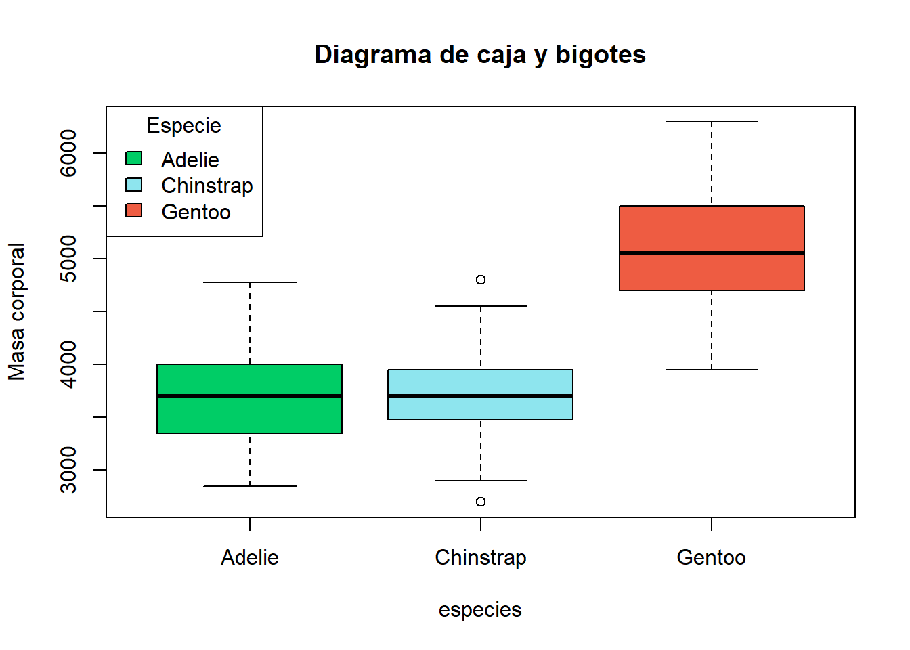
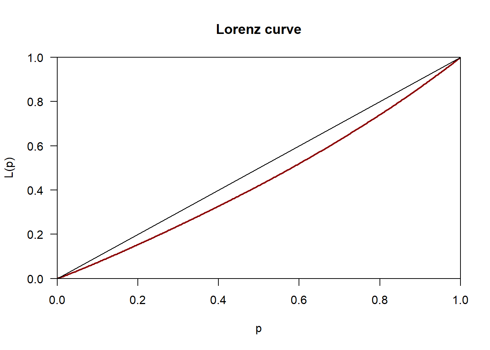

library(palmerpenguins)
datos<-penguinsEn esta ocasión vamos a hacer un ejemplo completo de como debería empezarse a trabajar con unos datos, arrancando desde un estudio descriptivo de los mismos. Para este ejemplo únicamente vamos a trabajar con una variable, pero este análisis podría hacerse de manera bidimensional o con más variables.
Lo primero es determinar la base de datos con la que vamos a trabajar. Para ello se ha seleccionado penguins perteneciente a la librería palmerpenguins.
Una vez cargados los datos se puede usar la función names para ver el nombre de las variables, mientras que con la orden attach se agiliza la manipulación de nuestro data.frame pues permite referenciar las columnas de este directamente. Hay que tener cuidado con esta última función pues en caso de que exista otra variable con el mismo nombre en tu entorno de R pueden existir conflictos.
names(datos)[1] "species" "island" "bill_length_mm"
[4] "bill_depth_mm" "flipper_length_mm" "body_mass_g"
[7] "sex" "year" attach(datos)También podemos ver como se encuentra estructurada la base de datos mostrando las primeras filas de la misma:
head(datos)# A tibble: 6 × 8
species island bill_length_mm bill_depth_mm flipper_length_mm body_mass_g
<fct> <fct> <dbl> <dbl> <int> <int>
1 Adelie Torgersen 39.1 18.7 181 3750
2 Adelie Torgersen 39.5 17.4 186 3800
3 Adelie Torgersen 40.3 18 195 3250
4 Adelie Torgersen NA NA NA NA
5 Adelie Torgersen 36.7 19.3 193 3450
6 Adelie Torgersen 39.3 20.6 190 3650
# ℹ 2 more variables: sex <fct>, year <int>Por tanto vemos que tenemos ocho variables, de las cuales nos vamos a centrar en las cuantitativas, puesto que las otras se entiende a que se refieren:
bill_length_mm: Longitud del pico del pingüino en milímetros.bill_depth_mm: Profundidad del pico del pingüino en milímetros.flipper_length_mm: Longitud de la aleta del pingüino en milímetros.body_mass_g: Masa corporal del pingüino en gramos.
En este ejemplo nos focalizaremos en la variable asociada a la masa corporal. Sin embargo, todo el análisis siguiente puede ser replicado para caulquiera de las otras tres variables descritas.
Dicho esto es el momento de mirar si tenemos datos faltantes en la muestra. Puesto que si disponemos de varios valores de este tipo y una muestra considerablemente grande, se crea una nueva base de datos sin ellos para no perder la original y obtener los siguientes resultados a partir de ella.
sum(is.na(datos))[1] 19nrow(datos)[1] 344datos2<-na.omit(datos)
masa_corporal<-datos2$body_mass_gAntes de obtener las medidas descriptivas típicas, como son las de posición, dispersión o forma, puede ser interesante ver como se encuentran los datos desde el punto de vista gráfico.
Representaciones gráficas
Histograma
Puesto que disponemos de datos continuos, podemos comenzar representando un histograma de la masa corporal.
minimo = min(masa_corporal)
maximo = max(masa_corporal)
rango = maximo - minimo
intervalos = 9 # número de intervalos de igual amplitud que quiero crear
hist(masa_corporal,breaks = seq(minimo,maximo,rango/intervalos),freq = FALSE,col="royalblue",xlab="Masa corporal",ylab = "Porcentaje",main = "Histograma de la masa corporal")
Con esta gráfica ya podemos hacernos una idea de que el valor más frecuente para el peso corporal de los pingüinos está entre los 3.5kg y los 4kg. También se aprecia un claro sesgo hacía la derecha, lo que se traduce en aunque la mayoría de los pingüinos tienen pesos bajos o medios, existe un menor grupo de estos que posee pesos significativamente más altos. Esto último también nos indica que la media será mayor que la mediana, pero eso lo veremos más adelante.
Diagrama de caja y bigotes
Otro gráfico esencial es el diagrama de caja y bigotes, también conocido como diagrama box-Whisker. La importancia de este gráfico reside en que nos permite ver con precisión la posible existencia de valores atípicos u outliers (aquellos datos que presentan un comportamiento anómalo al resto). En caso de que existieran habría que investigar que causas pueden estar provocándolos, como datos mal recogidos o introducidos, o si se tratan de valores plausibles, por lo que dependerá del investigador en cuestión la manera de tratarlos.
boxplot(masa_corporal,ylab="Masa corporal",main="Diagrama de caja y bigotes",col = "magenta3")
En este caso solo nos interesa la masa corporal, pero podría ser interesante como se comporta dicha variable en función de otras como las cualitativas que veíamos al principio. Por ejemplo, podemos ver como se comporta el peso dependiendo de la especie. Además se añade una leyenda que puede ser útil para otros proyectos.
especies<-datos2$species
boxplot(masa_corporal~especies,col = c("springgreen3","cadetblue2","tomato2"),ylab="Masa corporal",main="Diagrama de caja y bigotes")
legend("topleft",legend = levels(especies),fill = c("springgreen3", "cadetblue2", "tomato2"),title = "Especie")
Podemos ver como para la especie Chinstrap si existen valores atípicos, pero como lo estamos estudiando de manera conjunta con el resto de especies no entraremos más en detalle.
Curva de Lorenz
El último gráfico que se presenta es la curva de Lorenz.
library(ineq) # para usarlo hay que cargarlo en la memoria
plot(Lc(masa_corporal), col="darkred", lwd=2) 
Viendo la gráfica podemos decir que la distribución de la masa corporal es bastante equitativa entre los pingüinos, pues la curva está bastante próxima a la diagonal. Por tanto, no hay unos pingüinos que concentran mayoritariamente todo el peso al igual que no existen individuos extremadamente delgados comparados con el resto, siendo la distribución bastante equitativa.
Para terminar los gráficos se recomienda la web RCHARTS donde se podrá encontrar bastante información sobre distintas paletas de colores o la librería ggplot2 muy utilizada para las visualizaciones de datos.
Medidas univariantes
Una primera manera de ver un resumen estadístico de nuestros datos es mediante la orden summary. Sin embargo, esta función puede resultar algo pobre pues solo devuelve la media, la mediana, el primer y tercer cuantil, y los valores máximo y mínimo de los datos.
summary(masa_corporal) Min. 1st Qu. Median Mean 3rd Qu. Max.
2700 3550 4050 4207 4775 6300 Existen otras funciones como describe de la librería psych o stat.desc de la librería pastecs que proporcionan resúmenes algo más completos pero sin llegar a proporcionar todas las medidas que podemos necesitar.
Por ello se irán indicando a continuación la manera de obtener diferentes medidas de posición, dispersión, forma y concentración. Puesto que se proporcionan bastantes medidas, se ofrecerán unas conclusiones generales al final de la sección, únicamente para esta variable, pero se podrían replicar para el resto.
Estadísticos de posición
Son aquellos que describen dónde se concentran los valores de la variable. La manera de obtenerlos en R es la siguiente:
# Número de observaciones
n <- length(masa_corporal)
# Media aritmética
media<-mean(masa_corporal)
media[1] 4207.057# Mediana (la función var calcula la cuasivarianza)
median(masa_corporal)[1] 4050# Moda
moda <- as.numeric(names(which.max(table(masa_corporal))))
moda[1] 3800# Quartil 1
quantile(masa_corporal, probs = 0.25) 25%
3550 # Quartil 3
quantile(masa_corporal, probs = 0.75) 75%
4775 Medidas de dispersión
Son aquellas que miden la variabilidad o dispersión de los datos. La manera de obtenerlos en R es la siguiente:
# Varianza (la función var calcula la cuasivarianza)
varianza <- ((n - 1) / n) * var(masa_corporal)
varianza[1] 646425.4# Desviación típica
desv_tip <- sqrt(varianza)
desv_tip[1] 804.0059# Mínimo
min(masa_corporal) [1] 2700# Máximo
max(masa_corporal)[1] 6300# Rango total
rango <- maximo - minimo
rango[1] 3600# Coeficiente de variación
CV <- desv_tip / abs(media)
CV[1] 0.1911089Medidas de forma
Son aquellas que indican la forma de la distribución, concretamente consideramos el coeficiente de asimetría y curtosis. Se pueden obtener mediante la librería moments.
library(moments)
# Asimetría
skewness(masa_corporal)[1] 0.4701162# Curtosis
kurtosis(masa_corporal) - 3[1] -0.7404859Índice de Gini
Es una medida de concentración que permite evaluar la desigualdad en la distribución de la variable. Se puede calcular mediante la función ineq perteneciente a la librería con mismo nombre.
library(ineq)
ineq(masa_corporal, type = "Gini")[1] 0.1084586Conclusiones generales
Con las medidas se confirman algunas conclusiones que vimos mediante los gráficos como que la media es mayor que la mediana, pues la distribución tenía asimetría a la derecha, quedando esto a su vez remarcado gracias al coeficiente de asimetría, el cual es > 0. Por otro lado, el coeficiente de curtosis es < 0, lo que indica que la distribución de la masa corporal es más achatada que la de una distribución normal. Por último, el índice de Gini es muy próximo a 0, por lo que la distribución es muy equitativa como se comprobó con la curva de Lorenz.